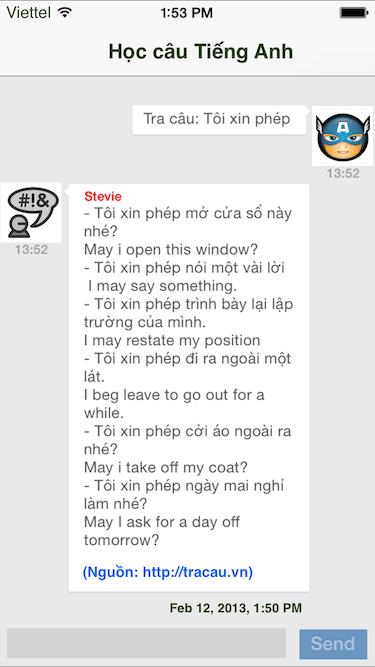

API cho lập trình viên
Chúng tôi cung cấp hoàn toàn miễn phí giao diện lập trình (API) để bạn có thể tích hợp, hoặc thiết kế riêng cho mình ứng dụng truy xuất dữ liệu của Tracau.
Điều khoản sử dụng
Trước khi sử dụng API của Tracau.vn, xin bạn vui lòng tuân theo những điều khoản sau đây:
- • Gửi email xin phép đến địa chỉ [email protected] để được email chấp thuận từ chúng tôi.
- • Không được phép sử dụng nguyên cụm từ "Tra câu", "Tra câu Việt - Anh" cho tên sản phẩm và dịch vụ của bạn. Chúng tôi làm điều này để tránh việc lạm dụng để gây nhầm lẫn với sản phẩm chính mà chúng tôi đã và đang triển khai.
- • Hiển thị thông tin về bản quyền của Tra câu đồng thời trên kết quả truy vấn, trên ứng dụng (hoặc website) và mô tả trên trang phân phối (website, Apple Store, Goole Play Store, v.v...). Thông tin bao gồm:
- Mẫu biểu trưng: Liên kết với website: http://tracau.vn
- Tên sản phẩm: Tra câu Việt - Anh
- Website: http://tracau.vn
Mẫu 1: Mẫu 2:
Kết quả truy vấn: Biểu trưng: 
API
# Tra câu và tra từ Anh - Việt, Việt - Anh:https://api.tracau.vn/{api-key}/s/{value}/{lang}# Tra từ điển Pháp - Anh - Việt:
https://api.tracau.vn/{api-key}/df/{value}# Tra từ điển Tiếng Nhật - Anh - Việt:
https://api.tracau.vn/{api-key}/dj/{value}# Tìm kiếm phụ đề phim:
https://api.tracau.vn/{api-key}/sub/{value}/{lang}# Tìm kiếm bản dịch trên Youtube:
https://api.tracau.vn/{api-key}/trans/{value}Giải thích:
- {api-key} được mặc định bằng giá trị sau: WBBcwnwQpV89
- {value} là ý của câu cần tìm kiếm
- {lang} là ngôn ngữ cần tìm kiếm với các giá trị tùy chọn sau: en, vi
Bạn có thể giúp chúng tôi tiết kiệm chi phí máy chủ
Hiện nay, Tra câu đang phục vụ hoàn toàn miễn phí hàng triệu truy vấn mỗi ngày cho người dùng, nhà phát triển và các đối tác trong và ngoài nước. Chắc hẳn bạn cũng biết rằng kinh phí duy trì và phát triển dịch vụ như vậy là không hề nhỏ. Nhưng chỉ với vài phút thôi, bạn có thể giúp đỡ chúng tôi giảm bớt chi phí thuê máy chủ.
Hệ thống của chúng tôi hiện đang được vận hành và lưu trữ trên các máy chủ của hãng Digital Ocean. Đây là một trong những nhà cung cấp Cloud Servers tốt nhất thế giới hiện nay. Bạn chỉ cần sử dụng mã giới thiệu của chúng tôi đặt trong link dưới đây và đăng ký một tài khoản mới trên DigitalOcean. Bạn sẽ không phải trả bất kỳ một khoản chi phí nào mà thay vào đó sẽ được 10$ để dùng thử máy chủ của Digital Ocean. Nếu bạn thích dịch vụ của Digital Ocean và chi tiêu từ 25$ trở lên, chúng tôi sẽ được họ cộng điểm tín dụng tương đương với 25$.
Hãy giúp đỡ chúng tôi bằng cách nhấp vào liên kết bên dưới đây và đăng ký tài khoản mới trên Digital Ocean.
Xin chân thành cảm ơn bạn!